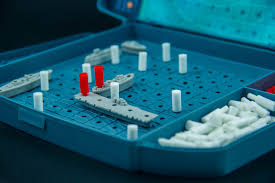
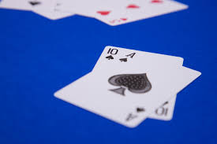

In high school I remade Battleship™ using Object-Oriented Programming. I accomplished this using exclusively Java. I used 2D Arrays to map out the grid. I also learned to practice good OOP practice by using polymorphism and encapsulation. This was my first significant project.
There are many more projects that I want to finish during my time as a computer science student. A project I’m currently studying and working towards is an advanced personal planner. Inspired by an app used in my previous work experience, Area Book, I want to create an app that can not only organize personal goals and plans, but also track important information. This information can prove helpful for call centers, sales companies, and any individual that wants to improve their quality of life. Each person’s potential is influenced by their ability to set a vision and goals for themselves. This app will help them realize their aspirations and become the best version of themselves.
Additionally, also using Java, I redesigned the famous card game, Blackjack. Without the use of real money, it allows the user to simulate a realistic game of Blackjack. Using random number generators and a fairly simple computer, this project was not only fun to build, but very fun to practice and play as a result.
 